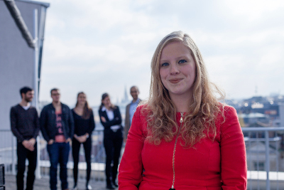

Bernhard Baumann, PhD


I’m an associate professor at the Center for Medical Physics and Biomedical Engineering at the Medical University of Vienna (MUW). I studied physics at the University of Vienna and received a PhD degree in Medical Physics from MUW (2009, supervisor: Christoph K. Hitzenberger). After postdoctoral training at the Research Laboratory of Electronics at the MIT and at New England Eye Center at Tufts University in 2010 and 2011, I returned to Vienna to do research and teach at MUW.
My research interests are the development of new optical methods for biomedical imaging – in particular optical coherence tomography (OCT) – and their application for improved diagnostics of diseases in both clinical and preclinical research.
Conrad Merkle, PhD
After completing my PhD in Biomedical Engineering at the University of California, Davis, USA (2018, supervisor: Vivek J. Srinivasan), I joined the Baumann Lab in February 2018 as a postdoctoral researcher.
My main research interests are focused on the development and application of optical imaging techniques, specifically optical coherence tomography (OCT), to study biomedical systems for preclinical or clinical research.
In particular, I am interested in the role of microvascular hemodynamics in the progression of various brain and eye diseases.
Marco Augustin, PhD

I received my master’s degree in medical informatics from Vienna University of Technology in 2014 and my PhD in medical physics from Medical University of Vienna in 2018, respectively. Currently, I am enrolled as a postdoctoral associate at the Center for Medical Physics and Biomedical Engineering at the Medical University of Vienna.
My interests include optical imaging techniques, especially optical coherence tomography and its functional extensions, as well as image processing and pattern recognition particularly in life sciences.

Danielle Harper, MPhys
I joined the Baumann Lab in September 2015 after completing my Masters degree in physics at the University of St Andrews in the United Kingdom.
As a PhD student at the Medical University of Vienna, I am currently working to design a new OCT system which is tailored for the in vivo functional imaging of the retina of animal models. My main interests lie in optical imaging, particularly in the optical designs which make techniques such as OCT possible.
Pablo Eugui, MSc
I started working in the Baumann Lab in November 2015 after finishing my Master in Biomedical Engineering at the Universidad Publica de Navarra in Spain.
I am currently enrolled as a PhD student of the Medical University of Vienna and working in fiber-based optical coherence tomography systems. My interests are optical imaging with different techniques, signal and image processing applied to the medical field and the study of different neurological diseases.
Antonia Lichtenegger, MSc
I finished my two master studies, technical mathematics and Biomedical Engineering, in 2015 at the Technical University of Vienna.
I joined the Baumann Lab in November 2015 and I am enrolled as a PhD student at the Medical University of Vienna. My current focus of research lies in designing, setting up and testing OCT systems. Furthermore my interests are integrating multimodal extensions to OCT systems and imaging processing.
Martina Muck
I received my BSc in Biomedical Science from the University of Applied Sciences FH Campus Wien and am currently enrolled in the master’s program for Tissue Engineering and Regenerative Medicine at the University of Applied Sciences Technikum in Vienna.
I joined the Baumann Lab in September 2016 and am working on the preparation of samples for OCT imaging.
Matthias Wechdorn
I am a fith's year student of Medicine at the Medical University of Vienna.
I joined the Baumann Lab for my master thesis where I will focus on the characterization of retinal neovascularization in the mouse eye using a multi-functional OCT approach.
Zoe Neuburger
I’m working in the Baumann lab during my master thesis for my studies in medicine at the Medical University of Vienna.
The aim of this thesis is to investigate amyloid beta plaques in Alzheimer’s disease brain tissue of human and mice. The goal is to correlate the data of histology and visible light optical coherence microscopy and statistically analyse the results.
The group
2017, Haus des Meeres, Vienna, Austria
(from left to right) Matthias Lembacher, Antonia Lichtenegger, Zoe Neuburger, Bernhard Baumann, Marco Augustin, Danielle Harper, Pablo Eugui, Matthias Wechdorn
(missing) Martina Muck
2016, Schloß Schönbrunn, Vienna, Austria
(from left to right, front) Antonia Lichtenegger, Stanislava Fialová, Danielle Harper
(from left to right, back) Bernhard Baumann, Simon Strehn, Marco Augustin, Pablo Eugui, Martina Muck, Konrad Leskovar
2015, Naturhistorisches Museum, Vienna, Austria
(from left to right) Antonia Lichtenegger, Pablo Eugui, Stanislava Fialová, Bernhard Baumann, Danielle Harper, Marco Augustin
Simon Strehn (Master Student Technical Physics @ Vienna University of Technology, Vienna, Austria)
Last known position (2018): Robert Bosch AG
Konrad Leskovar (Master Student Technical Physics @ Vienna University of Technology, Vienna, Austria)
Last known position (2017): ---
Stanislava Fialova (PhD Student Medical Physics @ Medical University of Vienna, Vienna, Austria)
Last known position (2017): Kvant Ltd.
Carlos Reyes (Master Student Biophotonics, Europhotonics @ Erasmus Mundus)
Last known position (2017): Tyndall Photonics, University College Cork, Tyndall National Institute, Cork, Ireland
Johannes Schirmer (Master Student Medicine @ Medical University of Vienna, Vienna, Austria)
Last known position (2018): Landeskrankenhaus Bludenz